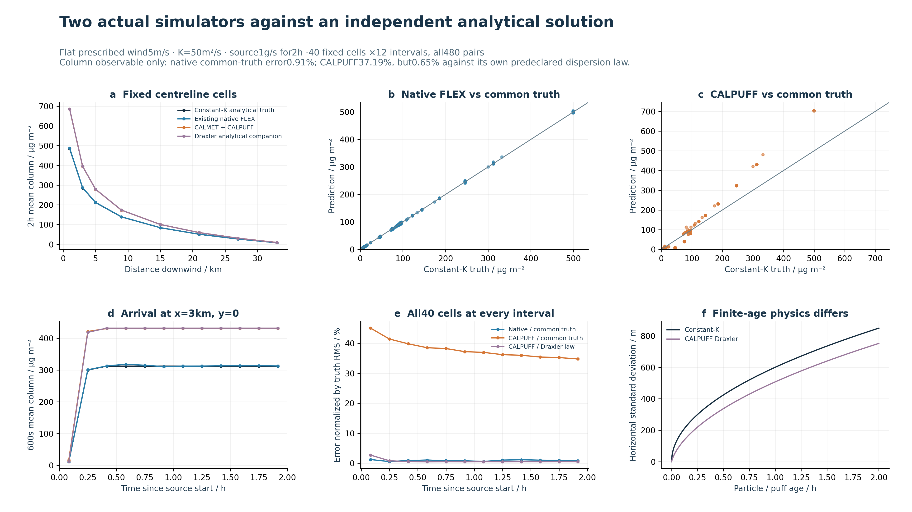
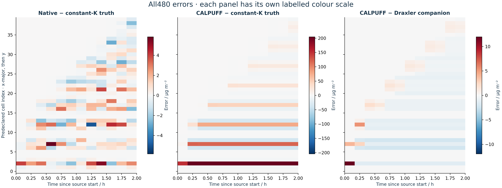

Analytical verification
Your existing transport solver and official CALMET + CALPUFF, tested independently against a prescribed solution.
Result: native FLEX reproduces the constant-diffusivity column solution with 0.91% normalized RMS error. CALPUFF differs by 37.19% from that target, primarily because its finite-age spreading law is different; it agrees with its own predeclared analytical law to 0.65%. These numbers verify this simplified observable, not real mountain prediction accuracy.
Normalized RMS error · all 480 pairs
Includes different dispersion physics
Separate companion, not a replaced target

One fixed experiment
A flat, unbounded analytical problem with prescribed uniform wind U=5 m/s; horizontal diffusivity K=50 m²/s; a continuous point source Q=1 g/s for 2 h; and no background, heat rise, chemistry or deposition. The source is at 6,000 m AGL to activate the unchanged native free-tropospheric constant-K branch. This is synthetic verification meteorology, not WRF forecast output or observations.
The observable is the vertical-integrated column B inµg/m². Native particles retain a delta-like vertical position; CALPUFF starts with vertical Gaussian σz=200 m. Integrating the column removes that source-shape difference, within the stated vertical quadrature and truncation error.
Independent truth
For zero initial concentration and the source at x=y=0, the Green function yields the continuous-release solution. Neither simulator output is read by the truth calculation.
Both model products are compared with the same 500×250 m rectangular cell average and 600 s time mean. A normal-CDF rectangle probability reduces the truth integral to one dimension:
Independent checks: tightening relative quadrature tolerance from 10⁻⁸ to 10⁻¹⁰ changes the 480 values by 0 at stored precision; eight fixed steady centreline points also agree with the closed-form modified-Bessel solution to better than 10⁻⁷ relative error.
Two genuine model runs
- Existing native FLEX: the delivered production binary, unmodified for this test;300,000 requested particles,299,999 retained,8 OpenMP threads,10 s synchronization/sampling. No substitute particle solver was written. Prescribed uniform fields use the WRF-compatible file layout and unit map factors. Actual final particle heights all equal 6,000 m, above diagnosed PBL≈100 m and below the 10,893 m tropopause.
- Official reference: unmodified vendor CALMET 6.4.0 → CALPUFF 6.42 → CALPOST 6.221. CALMET uses supported LCC objective analysis with one explicitly synthetic surface station and one synthetic sounding on the central meridian; no terrain adjustment or prognostic wind ingestion. Across all 81×41 cells,12 layers and 12 intervals, maximum U/V error is 4.82×10⁻⁵/4.75×10⁻⁵m/s and maximum W is 3.94×10⁻⁶m/s.
- Fixed sampling:40 cells selected before concentration results: x=1,3,5,9,15,21,27,33 km and y=−1.5,−0.5,0,0.5,1.5 km. CALPUFF uses 8,000 point receptors:5×5 horizontal and 8 vertical Gauss–Legendre nodes per cell. The native column uses its original four vertical bins. All 480 pairs and numerical zeros are retained.
Why CALPUFF has two scores
CALPUFF MDISP=1 accepts the prescribed synthetic turbulence profile. With τ=60 s and σv=√(50/60)m/s, its Draxler law tends to K=σv²τ=50 m²/s at long ages, but it does not equal constant-K Brownian diffusion at finite age. These settings and this difference were declared before outputs. No source strength or turbulent parameter was tuned to improve agreement.
The Draxler companion includes the declared 1 m horizontal source sigma. Its discrepancy from constant-K truth has 37.21% normalized RMS error, nearly the same as CALPUFF's 37.19%. This supports a closure-based explanation for this case; it does not demonstrate that every residual is discretization error. Puff emission/advection steps, quadrature, source support and cutoff also contribute.
| Prediction / target | RMSE · µg/m² | Normalized RMS | Mean bias | r | FAC2¹ |
|---|---|---|---|---|---|
| Native FLEX / constant-K truth | 0.9921 | 0.913% | +0.261% | 0.999954 | 60.00% |
| CALMET + CALPUFF / constant-K truth | 40.4083 | 37.194% | +14.480% | 0.989264 | 36.98% |
| CALPUFF / own Draxler companion | 0.9391 | 0.649% | -0.426% | 0.999977 | 45.88% |
| Draxler companion / constant-K truth | 40.4272 | 37.211% | +14.969% | 0.989720 | 36.98% |
¹ FAC2 uses every pair nonzero in either array. It is sensitive to infinitesimal Gaussian tails: finite-particle empty bins and stock CALPUFF cutoffs yield zeros where mathematical truth remains positive. Common-truth comparisons have 430 numerically nonzero-union pairs and 50 both-numerical-zero pairs; native has 166 and CALPUFF 235 truth-positive/model-zero pairs. No tail mask or concentration floor is used. The 480-pair RMS scores also include these pairs.

Mass and independent particle checks
Expected source mass is 7.2 kg. Native final particle inventory is 7.199975709 kg (−0.0003374%); other four species have exactly zero mass. No removal is recorded. CALPUFF's original mass balance emits and retains 7.2 kg, with zero outflow, chemistry, dry and wet depletion.
Native final-particle diagnostics give K̂x=49.6854 and K̂y=50.0704 m²/s. Standardized second moments are 0.9965/1.0018, near the Gaussian target 1. These are diagnostics only; input K stays 50. The 208 zero-age newly released particles are not divided by zero in this moment check and remain included in all concentration outputs.
Original-output caveats, runtime and reproducibility
The existing month mass-ledger emission hook covers the production stack/plume release path, not this passive standard release. Its original CSV consequently contains emitted=0 and a spurious residual≈−7.2 kg; it is retained unchanged and is not represented as a successful ledger closure. The independent source-versus-final-particle inventory above is the mass check. DRYDEP/WETDEP NetCDF variables are all fill values when deposition is disabled; they are not converted to artificial zero maps. Native CONC/MIXINGRATIO have 12 complete finite/nonnegative frames and exact zero in non-source species.
Actual timed stages: native 2 h 70.06 s; successful CALMET 5.06 s, CALPUFF 20.14 s, CALPOST 5.03 s including controller polling. Truth evaluation≈0.43 s. Input-format and projection failures were preserved; they are not atmospheric instability. Earlier NWP-based CALMET output failed the unchanged 0.001 m/s uniform-wind check and was excluded before any reference concentration run. Mercator output was rejected by CALMET; the final LCC synthetic-station route passed. No third-party scientific source was changed.
Spatial cubature:8 vertical nodes over 5,200–6,800 m. For the initial σz=200 m Gaussian, the vertical rule's mass error is 0.1072%; the ±4σ tail excludes 0.006334%. No normalization is applied. Horizontal 5×5 quadrature and native particle bin/CIC support are different numerical observation operators. CALPUFF vertical spreading is not benchmarked independently by this column test.
Our inputs, native outputs, CALPUFF/CALPOST outputs, analytical code, full-pair data and checks are archived on Climate(Baiming). Licensed executables, source, manuals and sample datasets are not redistributed; obtain them from the vendor. Frozen generated inputs are the reproduction entry point; early preparation/repair scripts are the retained engineering history.
What this establishes
This is a controlled horizontal advection–diffusion verification of a column observable. It does not validate mountain winds, source buoyancy, full3D turbulence, building wakes, chemistry, wet removal, future weather or regulatory exposure accuracy. The earlier mountain comparison remains a separate, weak model-to-model agreement result.
The BC dispersion modelling guideline provides the regulatory model context; it does not make CALPUFF observational truth or approve this manufactured test configuration. See the official CALPUFF FAQ and official Version 6 distribution for turbulence options, model guidance and licensing.